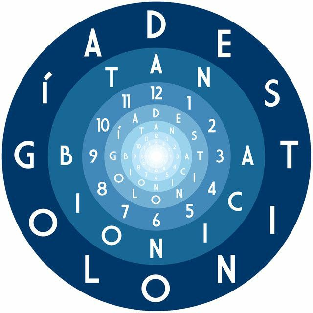

Trayectoria musical
Es considerada por diversos medios nacionales e internacionales como uno de los grupos musicales más importantes en la escena pop rock de Argentina luego de los años 2000. Cuentan con tres discos de oro y tres discos de platino, otorgados por CAPIF gracias a las ventas de los álbumes de estudio Obsesionario, Destinología y Hola mundo. A pesar del impasse del grupo, los hermanos Chano y Bambi continuaron como solistas.
Album más reconocido

- Ciudad mágica
- La melodía de Dios
- Mis noches de enero
- Tus ojos mil
- Música
- Hola noviembre
- Vámonos
- Mi vida secreta
- Momentos de mi vida
- El asunto